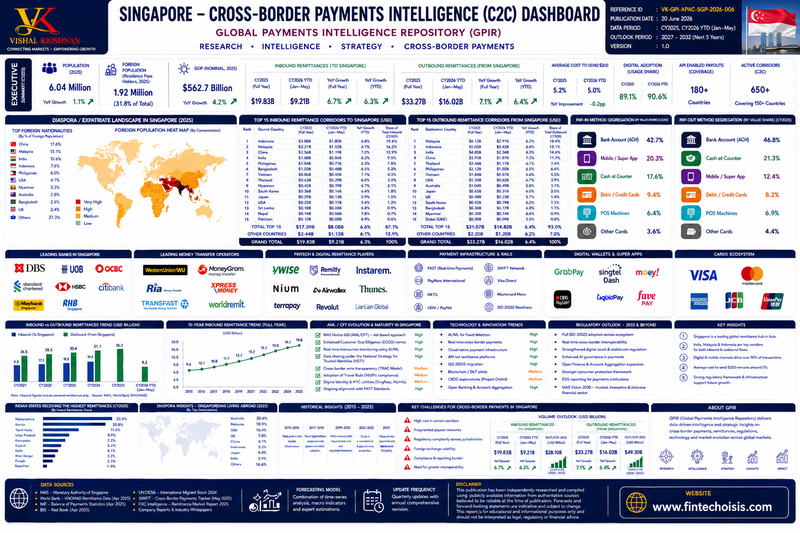

A regional financial and fintech hub, and an early mover in real-time payments and cross-border payment-system linkages.
Draft — Pending Verification. This Country Intelligence page is an initial editorial draft prepared from general public knowledge as a starting scaffold for GPIR’s country-level research series. Facts, figures, regulatory references and dates below have not yet been independently verified against primary/official sources and should not be relied upon for decision-making until reviewed and confirmed by GPIR’s editorial team.

Singapore is a leading regional financial and fintech hub, and an early mover in real-time domestic payments and cross-border payment-system linkages. The Monetary Authority of Singapore (MAS) has driven much of this through a combination of public infrastructure investment, an active regulatory sandbox and bilateral cross-border payment initiatives with regional peers.
Singapore's migration profile is predominantly that of a destination economy rather than an outbound diaspora source, so GPIR reports it that way rather than forcing an outbound-diaspora framing that doesn't fit the data. The Singapore Department of Statistics (SingStat) reported a non-resident population of 1.91 million as at June 2025, up 2.7% from 1.86 million in June 2024. Non-residents include work-pass holders, dependants and international students, and made up roughly one-third of Singapore's total population of 6.11 million at that date (alongside 3.66 million citizens and 0.54 million permanent residents).
Top foreign nationalities in Singapore (GPIR Dashboard, by share of foreign population, 2025): China 17.6%, Malaysia 13.1%, India 10.6%, Indonesia 7.6%, Philippines 6.0%, USA 4.7%, Myanmar 3.3%, Australia 2.8%, Bangladesh 2.4%, UK 2.4%, all other countries combined 27.3%. The dashboard's Foreign Population Heat Map (embedded above) shows this by concentration; GPIR has not yet rebuilt it as an interactive on-page map. GPIR has not identified a sufficiently current, sourced figure for Singaporeans resident abroad (outbound diaspora) — that remains Data Under Development rather than estimated.
Methodology note: the SingStat non-resident figure is an administrative count from Singapore's official population statistics, published twice yearly; about two-thirds of it is the foreign workforce (across all work-pass types), with most of the remainder Migrant Domestic Workers. GPIR's own dashboard figure (1.92M) is independently compiled and sits within 1% of the official SingStat count, which GPIR treats as a useful cross-check rather than a coincidence to rely on for future periods.
The national currency is the Singapore Dollar (SGD). Unlike most central banks, MAS manages monetary policy primarily through the exchange rate — allowing the SGD to float within an undisclosed policy band against a basket of currencies — rather than through domestic interest rates.
Key domestic payment infrastructure includes:
The banking sector is anchored by three major domestic banking groups — DBS, OCBC and UOB — alongside a substantial presence of foreign banks operating under MAS licensing, reflecting Singapore's role as a regional and international financial centre.
MAS and SingStat do not publish a strict P2P-app-only split of cross-border transfer volume separate from wider consumer remittances. GPIR's nearest sourced proxy is its own C2C (consumer-to-consumer) cross-border dashboard for Singapore (embedded above), compiled from the same RBI/World Bank-KNOMAD/IMF/UN DESA/SWIFT/BIS-style methodology used across GPIR Country Intelligence pages. Read the figures below as "C2C remittances," not as a certified P2P-only number.
| Metric | CY2025 (Full Year) | CY2026 YTD (Jan–May) |
|---|---|---|
| Inbound C2C remittances (to Singapore) | $19.83B ▲ 6.7% YoY | $9.21B ▲ 6.3% YoY |
| Outbound C2C remittances (from Singapore) | $33.27B ▲ 7.1% YoY | $16.02B ▲ 6.4% YoY |
| Average cost to send $200 | 5.2% | 5.0% |
| Digital / account-based adoption share | 89.1% | 90.6% |
| Number of transactions / avg. transaction value | Data Under Development | Data Under Development |
CY2026 YTD covers January–May only, per the source dashboard, and must not be read as a full-year estimate. Note that Singapore's outbound C2C volume ($33.27B) exceeds its inbound volume ($19.83B) — consistent with Singapore being primarily a sending, not receiving, market for cross-border consumer transfers, which fits its large non-resident/foreign-worker population profile above.
GPIR's Country Intelligence Dashboard (above) tracks Singapore's top 15 inbound and outbound C2C remittance corridors. By CY2025 share of inbound volume, the leading corridors were Indonesia (19.6%, $3.888B), Malaysia (16.2%, $3.21B), China (12.9%, $2.56B), India (11.6%, $2.30B) and the Philippines (7.8%, $1.54B). By CY2025 share of outbound volume, the leading corridors were Malaysia (18.4%, $6.12B), Indonesia (15.1%, $5.03B), India (14.6%, $4.85B), China (11.8%, $3.91B) and Thailand (7.5%, $2.48B). Full top-15 tables with CY2026 YTD and YoY growth are in the embedded dashboard image above.
Singapore's most concretely documented cross-border P2P infrastructure (as opposed to volume) is its network of real-time payment-system linkages: PayNow–UPI with India and PayNow–PromptPay with Thailand are both operational (see the Wallets, Mobile Money & Super Apps chapter). These linkages let users send money using a mobile number or national ID across the two systems without traditional correspondent-banking rails — notably, India is both a top-4 corridor by remittance volume above and Singapore's first live account-to-account linkage partner.
The Monetary Authority of Singapore (MAS) acts as both central bank and integrated financial regulator. Payment services are governed under the Payment Services Act 2019 (PS Act), which established a risk-based licensing framework covering activities from money-changing to digital payment token services.
Singapore has established cross-border real-time payment linkages, including PayNow–UPI with India and PayNow–PromptPay with Thailand. MAS has also run a series of forward-looking initiatives exploring digital money and asset tokenisation, including Project Ubin (wholesale settlement), Project Orchid (retail CBDC exploration) and Project Guardian (asset tokenisation), alongside an active fintech regulatory sandbox.
Data Under Development — a verified count of fintechs and payment participants operating in Singapore will be added once sourced against a primary MAS registry rather than estimated.
Diaspora & migration. Singapore's migration story is the inverse of a typical GPIR diaspora profile: it is overwhelmingly a destination market, not a source. SingStat's June 2025 count of 1.91 million non-residents (up 2.7% year-on-year) alongside a 6.11 million total population — closely matched by GPIR's own dashboard figure of 1.92 million foreign residents — confirms immigration, not emigration, as the relevant structural factor. China, Malaysia and India together account for over 40% of Singapore's foreign population by GPIR's breakdown, consistent with Singapore's role as a regional labour and financial hub.
C2C / P2P payments. Singapore is unusual among the markets GPIR has profiled so far in that its outbound C2C remittances ($33.27B, CY2025) are materially larger than inbound ($19.83B) — the opposite pattern from India. That is consistent with the diaspora finding above: a large resident non-citizen population sends money out more than the reverse. Both flows grew at a broadly similar pace in CY2026 YTD (Jan–May) to their CY2025 full-year rates, suggesting no sharp inflection so far this year.
Corridors & infrastructure. Indonesia, Malaysia, China and India dominate both inbound and outbound corridors, mirroring the top foreign-nationality groups in the diaspora section above — corridor volume tracks resident population composition closely for Singapore. Infrastructure-wise, Singapore is one of the more advanced APAC markets for cross-border retail payment interoperability, with live PayNow–UPI (India) and PayNow–PromptPay (Thailand) linkages; notably, India is both a top-4 remittance corridor and Singapore's first live linkage partner, which is a useful example of GPIR's Corridor Intelligence and Fintech Ecosystem sections describing the same underlying relationship from two angles.
Regulatory & ecosystem. MAS continues to run forward-looking digital-money initiatives (Ubin, Orchid, Guardian) alongside an active regulatory sandbox; this page's Regulatory Environment and Fintech & Digital Ecosystem sections track that content, unchanged from GPIR's original scaffold pending formal verification. A verified fintech/payments-participant count remains the one meaningful gap in this page's "At a Glance" cards.
This commentary is written to be re-editable as the underlying dashboard (SGP-2026-006) is refreshed, and as the outstanding fintech-count and transaction-level figures move from Data Under Development to sourced numbers — it should not be left describing figures that have since changed.
This page is a draft scaffold pending formal sourcing and citation against MAS publications and other primary references for its Currency, Payment Rails, Banking, Regulatory and Fintech sections. It should be treated as directional only until verified.
The Country at a Glance, Diaspora & Migration Intelligence, P2P Cross-Border Payments and Corridor Intelligence sections above draw on the following, independently dated sources:
Transaction counts, average ticket size, a verified fintech/payments-participant count, and any figure for Singaporeans resident abroad are marked Data Under Development above because GPIR has not identified a source that reports them at the granularity this page requires, and will not substitute an estimate for a verified figure.

{kind=link}